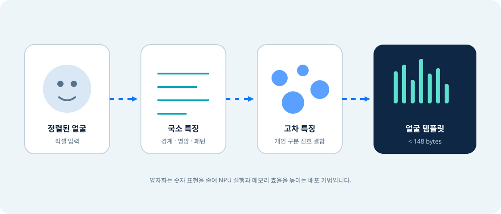

계층적 특징
초기 합성곱은 경계·명암 같은 국소 패턴을 보고, 뒤쪽 표현은 얼굴을 구분하는 더 복합적인 조합을 형성합니다.
04 · Technical guide
CNN이 얼굴 픽셀을 작은 비교용 템플릿으로 바꾸는 원리와 양자화의 의미를, 공개 범위를 넘지 않게 설명합니다.
Concept
얼굴 인식은 사진 자체를 저장해 픽셀끼리 비교하는 방식이 아니라, 학습된 CNN이 개인을 구분하는 특징을 압축 표현으로 만드는 방식입니다.

Three ideas
초기 합성곱은 경계·명암 같은 국소 패턴을 보고, 뒤쪽 표현은 얼굴을 구분하는 더 복합적인 조합을 형성합니다.
한 얼굴을 고정된 형식의 수치 특징으로 표현합니다. 가까운 특징은 같은 사람일 가능성이 높도록 학습하는 것이 일반 원리입니다.
부동소수점보다 작은 정수 표현을 활용해 모델과 중간값의 메모리, 연산 비용을 줄이고 NPU 실행에 맞춥니다.
| 공개된 표현 | 안전하게 설명할 수 있는 의미 | 말하면 안 되는 단정 |
|---|---|---|
| FaceDetector4B | 얼굴 위치를 찾는 id3 모델 | YOLO 계열이다 |
| FaceEncoder9B | 얼굴의 구분 특징을 만드는 id3 모델 | ArcFace 또는 MobileFaceNet 구조다 |
| quantized CNN | 양자화된 합성곱 신경망을 특징 추출에 사용 | 정확히 INT8이며 모든 연산이 NPU에 올라간다 |
| template <148 bytes | 등록 얼굴당 저장 표현이 매우 작음 | embedding dimension이 128 또는 특정 값이다 |
4B·9B·4A는 제품 모델명입니다. 공개 문서가 정의하지 않은 한 block 수, 버전 세대, 정확도 등급으로 추정할 수 없습니다.